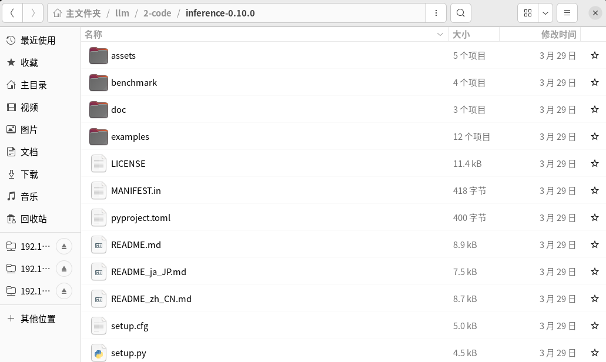
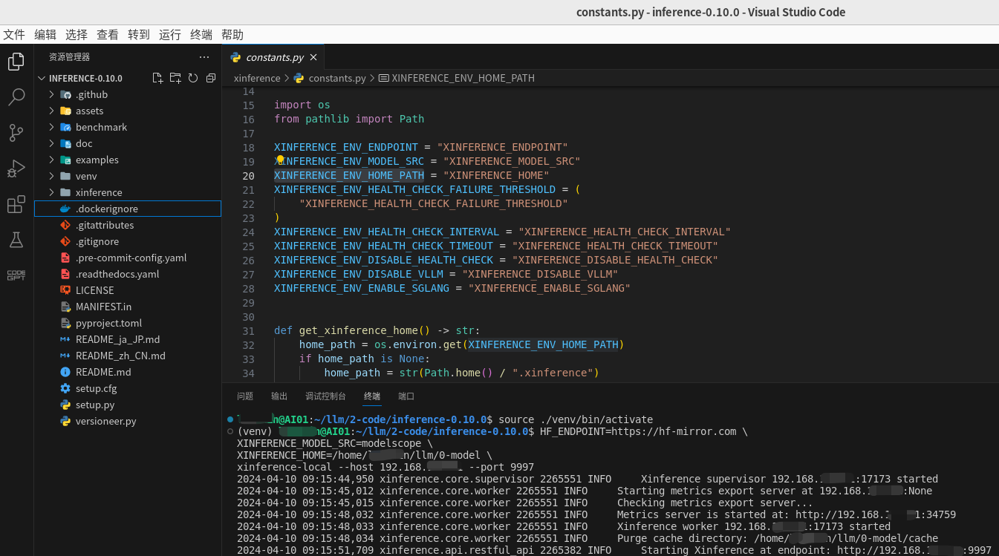
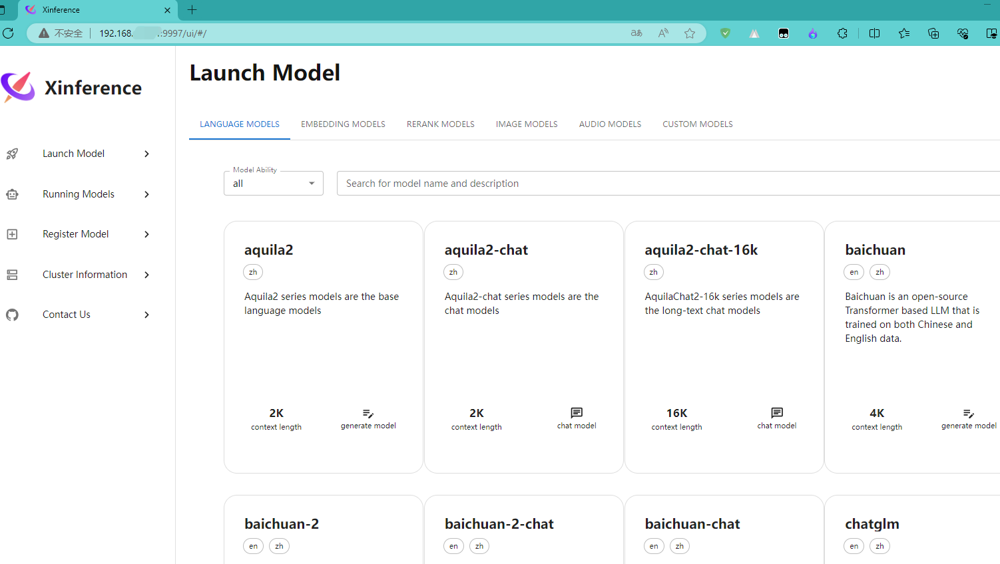
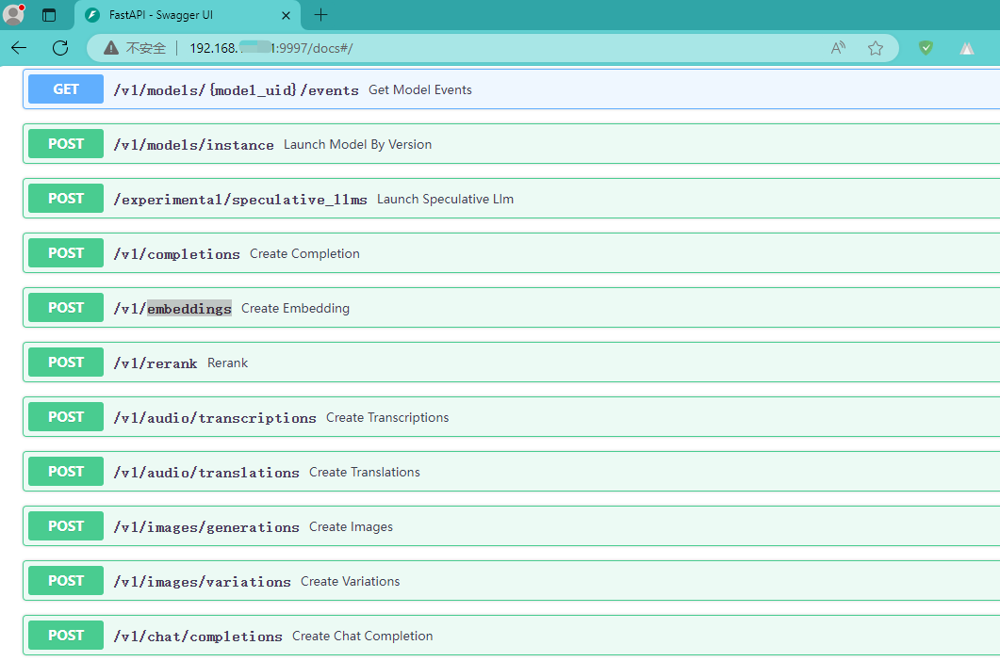
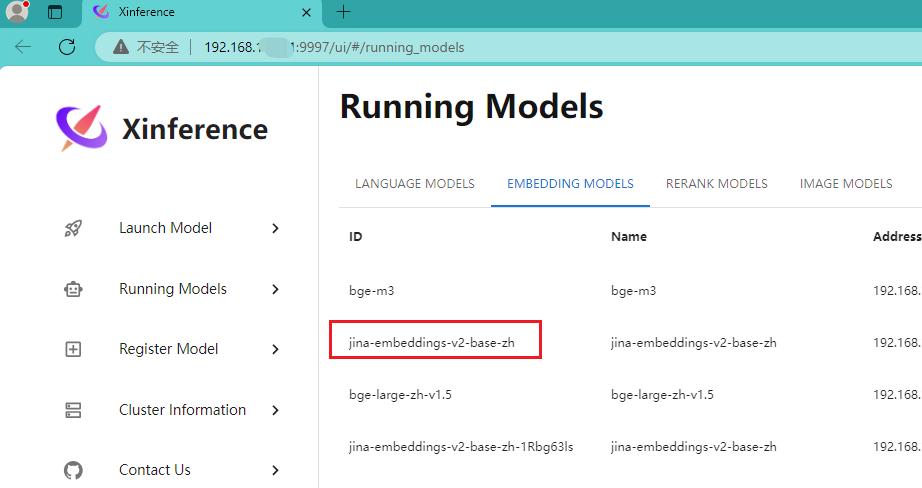
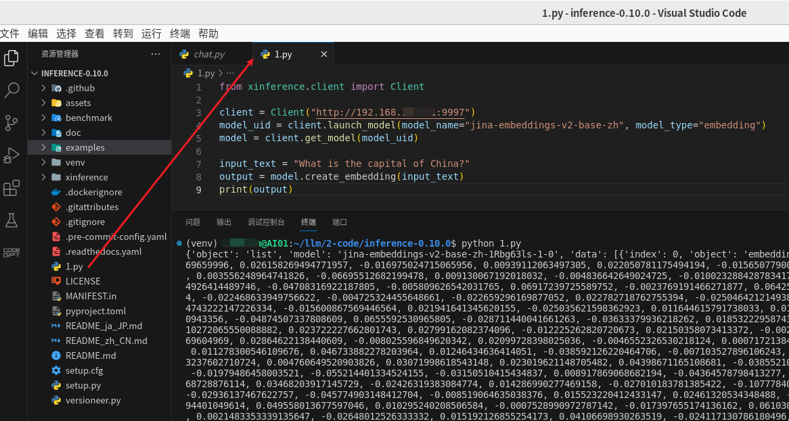
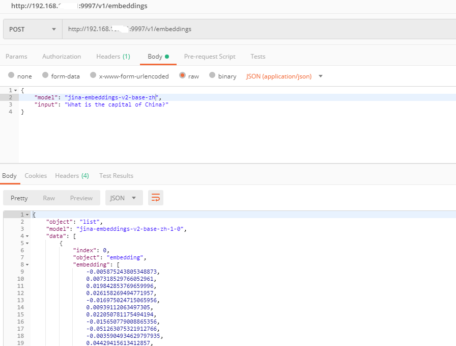

官网：GitHub - xorbitsai/inference
官方介绍：Xorbits Inference（Xinference）是一个性能强大且功能全面的分布式推理框架。可用于大语言模型（LLM），语音识别模型，多模态模型等各种模型的推理。通过 Xorbits Inference，你可以轻松地一键部署你自己的模型或内置的前沿开源模型。无论你是研究者，开发者，或是数据科学家，都可以通过 Xorbits Inference 与最前沿的 AI 模型，发掘更多可能。
官方文档：欢迎来到 Xinference！ — Xinference
运行环境：Ubuntu 22.04 + Intel(R)Xeon(R) CPU E5-2699 v4 2.20GHZ + RAM（512GB）
2024-04-09 这里下载的是

# 创建虚拟环境并激活
python3 -m venv venv
source ./venv/bin/activate
# 安装依赖
pip install "xinference[all]"
上面准备好后就可以启动了，启动命令如下：
HF_ENDPOINT=https://hf-mirror.com \
XINFERENCE_MODEL_SRC=modelscope \
XINFERENCE_HOME=/home/xxx/llm/0-model \
xinference-local --host 192.168.xxx.xxx --port 9997
环境变量或者更多参数请参考官方文档

接着我们再看一下Web 页面的效果，如下：

让我们再看一下他的接口文档页面，看一下都提供了哪些接口：

已经下载了几个

下面的代码来自：客户端 API — Xinference
这里采用
from xinference.client import Client
client = Client("http://192.168.xxx.xxx:9997")
model_uid = client.launch_model(model_name="jina-embeddings-v2-base-zh", model_type="embedding")
model = client.get_model(model_uid)
input_text = "What is the capital of China?"
output = model.create_embedding(input_text)
print(output)
运行结果如下图：

再使用
